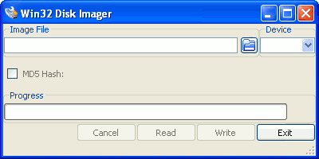

как установить img образ ubuntu на sd card под ubuntu
Создание SD карты с операционной системой для Raspberry Pi
Опубликовано 13.09.2012
Перед тем, как записывать SD карту с операционной системой для загрузки Raspberry Pi необходимо скачать образ операционной системы. Последние образы для загрузки можно скачать по адресу http://www.raspberrypi.org/downloads. Существует несколько разных дистрибутивов системы Linux для Raspberry Pi. Самым распространенным является Raspbian — адаптированный вариант дистрибутива Debian Linux. Помимо официальных образов существуют адаптированные другими энтузиастами варианты Raspbian, с ними можно ознакомиться на сайте системы http://www.raspbian.org/RaspbianImages. Удобнее всего скачивать образы карты при помощи бесплатной программы Bittorrent в системе Windows или Deluge и Transmission в системе Linux. Тем не менее, можно скачать образ и напрямую с сайта, хотя возможно это займет больше времени. Установка полученного образа на SD карту производится разными способами, в зависимости от операционной системы вашего PC. Самые простые способы описаны ниже.
Запись образа SD карты в системе Windows
- Скачайте образ SD карты как описано выше. Файл образа представляет собой архив ZIP.
- Распакуйте полученный архив. Внутри находится файл с расширением IMG. Это и есть образ SD карты.
- Вставьте карту в картридер и подключите его к компьютеру. Откройте программу Windows Explorer и посмотрите, какая буква диска присвоена вашей карте. Кроме того, если на карте памяти уже что то было записано, то лучше будет её отформатировать, чтобы избежать проблем на следующих шагах.
- Скачайте программу Win32DiskImager. Ссылка для закачки находится справа (зеленого цвета) с надписью «binary.zip».
- Распакуйте полученный архив и запустите программу. Лучше будет запустить ее с правами Администратора. 
- Укажите программе, где лежит распакованный на 2-м шаге образ SD карты.
- Укажите также букву диска SD карты из 3-го шага. Очень важно здесь не ошибиться, т.к. при неправильно указанной букве вы потеряете данные на жестком диске компьютера!
- Нажмите кнопку Write и подождите до окончания процесса записи.
- Закройте Win32DiskImager и отключите картридер с помощью «Безопасного извлечения устройства».
- Вставьте карту в Raspberry Pi, включите его и он загрузится! При первом запуске Raspbian откроет настроечное меню, с помощью которого можно будет расширить раздел на SD карты до максимально возможного, если ваша карта имеет объем больше 4 Гб.
После записи образа, в операционной системе Windows SD карта будет отображаться с объемом всего 75 Мб. Это связано с тем, что раздел карты, содержащий Rasbian не отображается в Windows.
Запись образа SD карты в системе Windows — если способ с Win32DiskImager не работает
На некоторых компьютерах программа Win32DiskImager не запускается или работает неправильно. В этом случае, есть другой способ:
- Скачайте образ SD карты (операционной системы) как описано выше. Файл образа представляет собой архив ZIP.
- Распакуйте полученный архив. Внутри находится файл с расширением IMG.
- Вставьте карту в картридер и подключите его к компьютеру. Откройте программу Проводник и посмотрите, какая буква диска присвоена вашей карте.
- Скачайте утилиту flashnul с сайта http://shounen.ru/soft/flashnul/. Полученный файл распакуйте например в папку flashnul на диске C:. Затем нажмите кнопку Пуск и в меню Все программы — Стандартные найдите пункт Командная строка. Нажмите на этот пункт меню правой клавишей и выберите «Запуск от имени Администратора». В открывшемся окне введите:
C:/flashnul/flashnul.exe -p
- flashnul ответит чем то похожим на этот список:
Available physical drives:
0 size = 250059350016 (232 Gb)
1 size = 1990197248 (1898 Mb)
Avaible logical disks:
C:
D:
F:
G:
H:
Press ENTER to exit.
- Номер SD карты указывается в левом столбце. В данном случае это «1». Возможно, что объем карты будет указан неправильно, например 75 Мб.
- Теперь введите следующую команду (где C:/raspbian/2012-08-16-wheezy-raspbian.img — это путь к файлу с образом карты) :
C:/flashnul/flashnul.exe 1 -L C:/raspbian/2012-08-16-wheezy-raspbian.img
- flashnul выведет описание диска на который будет производиться запись. Нужно проверить эту информацию и подтвердить вводом «Да» и нажатием Enter. В случае, если у программы отсутствует доступ к карте, попробуйте вытащить карту из картридера, вставить обратно и повторить запись. Также закройте все окна Проводника. Если же проблема с записью так и остается, попробуйте вместо номера диска указать его букву:
C:/flashnul/flashnul.exe H: -L C:/raspbian/2012-08-16-wheezy-raspbian.img
Документация на русском языке по работе с утилитой flashnul находится здесь.
Запись образа SD карты в командной строке Linux
Обратите внимание, что использование команды dd может повредить информацию на жестком диске вашего компьютера! Если вы укажете неверное устройство в командах, приведенных ниже, это уничтожит ваш раздел с системой Linux! Будьте предельно осторожны!
- Скачайте образ SD карты (операционной системы) как описано выше.
- По возможности проверьте, что контрольная сумма полученного файла совпадает с указанной на странице закачки. Для этого запустите в терминале команду (предполагается, что архив скачан в домашний каталог):
sha1sum ~/2012-08-16-wheezy-raspbian.zip
Эта команда посчитает контрольную сумму SHA-1, которая должна совпасть с указанной на странице закачки.
- Распакуйте образ SD карты командой:
unzip ~/2012-08-16-wheezy-raspbian.zip
- Выполните команду df -h, чтобы выяснить какие устройства примонтированы.
- Вставьте SD карту в картридер и подключите его к компьютеру.
- Запустите df -h снова. Новое устройство — это ваша SD карта. В левой колонке указывается имя устройства, оно выглядит как «/dev/mmcblk0p1» или «/dev/sdd1». Последняя часть имени устройства («p1» или «1» соответственно) — этот обозначение раздела на карте. Но поскольку вы будете записывать карту полностью, а не отдельный раздел, то эту часть нужно исключить из имени устройства (т.е. должно остаться «/dev/mmcblk0» или «/dev/sdd»). Обратите внимание, что устройство SD карты может быть показано командой df -h несколько раз, например если карта уже отформатирована для использования с Raspberry Pi, то она содержит несколько разделов.
- Теперь, когда название устройства SD карты известно, её нужно размонтировать, чтобы файлы на ней были не доступны, пока будет записываться образ карты. Это можно сделать следующей командой, заменив имя раздела «/dev/sdd1» своим, полученным в пункте 6:
umount /dev/sdd1
(если карта памяти содержит несколько разделов, то нужно размонтировать каждый из них).
- Запишите образ SD карты следующей командой, заменив в ней в параметре if= путь к образу системы и в параметре of= имя устройства SD карты. Внимание! Это очень важно указать правильно имя устройства SD карты, в противном случае вы потеряете все данные на вашем компьютере!!! Убедитесь, что вы указали именно имя устройства SD карты, а не имя раздела (т.е. sdd, а не sdds1 или sddp1, или mmcblk0, а не mmcblk0p1 ).
dd bs=1M if=~/2012-08-16-wheezy-raspbian/2012-08-16-wheezy-raspbian.img of=/dev/sdd
Возможно, придется указать команду sudo в строке перед dd, для того чтобы получить права суперпользователя. Команда dd не выводит какой либо информации о ходе процесса, поэтому может показаться, что она зависла. Запись может занять более пяти минут. Если ваш картридер имеет лампочку, то можно контролировать процесс по ее миганию. В противном случае, можно ввести команду sudo pkill -USR1 -n -x dd в другом окне эмулятора терминала.
- Вместо команды dd можно использовать команду dcfldd. Она дает представление о ходе процесса и оставшемся времени.
- Записанную карту можно проверить, считав ее обратно в файл командой dd и затем выполнив команду diff (или md5sum) между исходным образом и полученным файлом. Отличий быть не должно.
- По окончании записи, выполните команду sudo sync, чтобы убедиться, что все данные из буфера записи перенесены на карту и её можно безопасно отключить.
- Вытащите карту памяти из картридера, вставьте её в Raspberry Pi и включите его!
Запись образа SD карты в графической оболочке Linux
Если вы используете Ubuntu и не хотите вводить команды в окне терминала, то можно воспользоваться утилитой ImageWrite для записи файла образа SD карты на карту памяти.
- Скачайте образ SD карты (операционной системы) как описано выше.
- Нажмите на архив с образом карты правой клавишей мыши и распакуйте его в домашний каталог. Внимание! Программа ImageWriter имеет ошибку, из-за которой происходит сбой, если имя файла образа или путь к нему имеют пробелы. Поэтому, убедитесь в отсутствии пробелов в имени файла образа или пути к нему, перед тем, как начать запись.
- Вставьте SD карту в картридер и подключите его к компьютеру.
- Установите программу ImageWriter при помощи Центра Приложений Ubuntu.
- Запустите ImageWriter (он потребует пароль суперпользователя).
- Выберите файл образа системы (например 2012-08-16-wheezy-raspbian.img), который будет записан на карту памяти. Обратите внимание, что поскольку программа ImageWriter запущена под ученой записью суперпользователя, то будет открыт домашний каталог суперпользователя и сначала придется перейти в свой домашний каталог, чтобы указать файл образа.
- Укажите устройство, на которое будет произведена запись образа (скорее всего название устройства SD карты выглядит похоже на «/dev/mmcblk0» или «/dev/sdc»).
- Нажмите кнопку «Write to device» для начала записи.
- Подождите, пока запись закончится и затем вставьте SD карту в свой Raspberry Pi.
Запись образа карта в системе Mac OS X
- Следующие команды должны запускаться под учетной записью, имеющей полномочия суперпользователя.
- Скачайте образ SD карты (операционной системы) как описано выше.
- При необходимости, проверьте контрольную сумму, с помощью команды:
shasum ~/Downloads/2012-08-16-wheezy-raspbian.zip
- Распакуйте полученный архив с образом системы командой:
unzip ~/Downloads/2012-08-16-wheezy-raspbian.zip
или просто дважды щелкните по нему мышью, он распакуется автоматически.
- В окне терминала выполните команду df -h
- Вставьте SD карту в картридер и подключите его к компьютеру.
- Снова выполните команду df -h и посмотрите, какое устройство появилось. Запишите куда нибудь название устройства (или устройств) разделов SD карты (они выглядят как /dev/disk3s1)
- Размонтируйте раздел SD карты, чтобы получить возможность записать образ:
sudo diskutil unmount /dev/disk3s1
- На этом шаге определим имя устройства низкоуровневого доступа к SD карте. Предположим, что на шаге 7 вы получили имя раздела /dev/disk3s1. Отбросьте номер раздела «s1» в конце имени и добавьте букву r перед словом disk. Т.е. имя устройства станет /dev/rdisk3. Это очень важный шаг, т.к. ошибка в нем приведет к уничтожению информации в вашем компьютере! Возможно также, что у вас подключены другие карты памяти или флеш накопители. Проверьте несколько раз, запуская команду df -h, подключая и отключая картридер или SD карту.
/dev/disk3s1 => /dev/rdisk3
- В окне терминала введите следующую команду, указав правильно в ней путь к образу системы (полученному на шагах 2-4), а также имя устройства rdisk. Еще раз внимательно прочитайте шаг 9 и проверьте правильно ли выполнили описанные в нем действия!
sudo dd bs=1m if=~/Downloads/2012-08-16-wheezy-raspbian/2012-08-16-wheezy-raspbian.img of=/dev/rdisk3
- После окончания работы команды dd, отключите SD карту:
sudo diskutil eject /dev/rdisk3
- Вытащите карту памяти из картридера, вставьте её в Raspberry Pi и включите его!
Оригинал инструкции находится по адресу http://elinux.org/RPi_Easy_SD_Card_Setup
Изображения с сайтов http://www.raspbian.org/ и http://www.mattsbits.co.uk
====================================